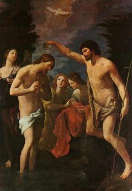
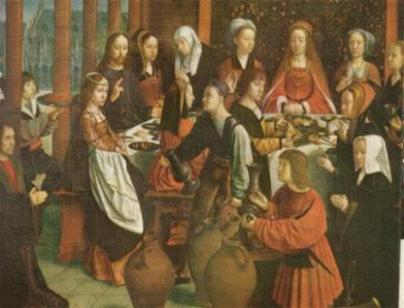
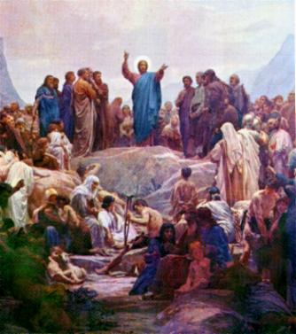
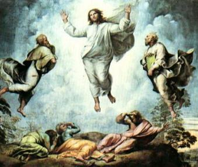
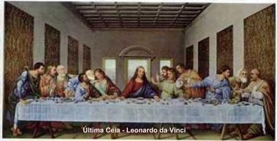

N� 1 -
LA SE�AL DE LA CRUZ - Por la se�al de la santa cruz,
de nuestros enemigos l�branos, SE�OR DIOS nuestro. En el nombre del PADRE,
y del HIJO, y del ESP�RITU SANTO, como era en un principio
ahora y siempre por los siglos de los siglos. Am�n.
N� 1 -
LA SE�AL DE LA CRUZ - Por la se�al de la santa cruz,
de nuestros enemigos l�branos, SE�OR DIOS nuestro. En el nombre del PADRE,
y del HIJO, y del ESP�RITU SANTO, como era en un principio
ahora y siempre por los siglos de los siglos. Am�n.
 N� 2 -
EL CREDO (Profesi�n de fe) - Creo en DIOS PADRE
todopoderoso, creador del cielo y de la tierra. Creo en JESUCRISTO su �nico HIJO,
NUESTRO SE�OR, que fue concebido por obra y gracia del ESP�RITU SANTO, naci� de
Santa Mar�a Virgen, padeci� bajo el poder de Poncio Pilato, fue crucificado,
muerto y sepultado, descendi� a los infiernos, al tercer d�a resucit� de entre
los muertos, subi� al cielo y est� sentado a la derecha de DIOS PADRE
todopoderoso. Desde all� ha de venir a juzgar a vivos y muertos. Creo en el
ESP�RITU SANTO, la Santa Iglesia Cat�lica, la Comuni�n de los Santos, el perd�n
de los pecados, la resurrecci�n de la carne y la vida eterna. Am�n.
N� 2 -
EL CREDO (Profesi�n de fe) - Creo en DIOS PADRE
todopoderoso, creador del cielo y de la tierra. Creo en JESUCRISTO su �nico HIJO,
NUESTRO SE�OR, que fue concebido por obra y gracia del ESP�RITU SANTO, naci� de
Santa Mar�a Virgen, padeci� bajo el poder de Poncio Pilato, fue crucificado,
muerto y sepultado, descendi� a los infiernos, al tercer d�a resucit� de entre
los muertos, subi� al cielo y est� sentado a la derecha de DIOS PADRE
todopoderoso. Desde all� ha de venir a juzgar a vivos y muertos. Creo en el
ESP�RITU SANTO, la Santa Iglesia Cat�lica, la Comuni�n de los Santos, el perd�n
de los pecados, la resurrecci�n de la carne y la vida eterna. Am�n.
 N� 3 - Orar TRES AVEMAR�AS en honor a la SANT�SIMA TRINIDAD -
DIOS te salve, Mar�a, llena eres de gracia, el SE�OR es contigo,
bendita T� eres entre todas las mujeres y bendito es el fruto de tu vientre JES�S.
Santa Mar�a, MADRE DE DIOS, ruega por nosotros pecadores, ahora y en la hora de
nuestra muerte. Am�n.
N� 3 - Orar TRES AVEMAR�AS en honor a la SANT�SIMA TRINIDAD -
DIOS te salve, Mar�a, llena eres de gracia, el SE�OR es contigo,
bendita T� eres entre todas las mujeres y bendito es el fruto de tu vientre JES�S.
Santa Mar�a, MADRE DE DIOS, ruega por nosotros pecadores, ahora y en la hora de
nuestra muerte. Am�n.
 No N� 4 - Anuncia ahora el MISTERIO LUMINOSO
No N� 4 - Anuncia ahora el MISTERIO LUMINOSO
 1� Misterio - El Bautismo de JES�S en el Jord�n.
1� Misterio - El Bautismo de JES�S en el Jord�n.
 Meditando:
CRISTO, como inocente que se hace �pecado� por nosotros (cf. 2 Co 5, 21), entra
en el agua del r�o, el cielo se abre y la voz del PADRE lo proclama HIJO
predilecto (cf. Mt 3, 17 par.), y el ESP�RITU desciende sobre �l para investirlo
de la misi�n que le espera. (2 Co 5, 21) A quien no conoci� pecado, le hizo pecado
por nosotros, para que vini�semos a ser justicia de DIOS en �l.
Meditando:
CRISTO, como inocente que se hace �pecado� por nosotros (cf. 2 Co 5, 21), entra
en el agua del r�o, el cielo se abre y la voz del PADRE lo proclama HIJO
predilecto (cf. Mt 3, 17 par.), y el ESP�RITU desciende sobre �l para investirlo
de la misi�n que le espera. (2 Co 5, 21) A quien no conoci� pecado, le hizo pecado
por nosotros, para que vini�semos a ser justicia de DIOS en �l.
�Yo os bautizo en agua para
conversi�n; pero aquel que viene detr�s de m� es m�s fuerte que yo, y no soy digno
de llevarle las sandalias. El os bautizar� en ESP�RITU SANTO y fuego.
En su mano tiene el bieldo y va a limpiar su era: recoger� su trigo en el granero,
pero la paja la quemar� con fuego que no se apaga�. Entonces
aparece JES�S, que viene de Galilea al Jord�n donde Juan, para ser bautizado por
�l. Pero Juan trataba de imped�rselo diciendo:
�Soy yo el que necesita ser bautizado por TI, �y T� vienes
a m�?� JES�S le respondi�:
�D�jame ahora, pues conviene que as� cumplamos toda justicia�.
Entonces le dej�. Bautizado JES�S, sali� luego del agua; y en esto se abrieron los
cielos y vio al ESP�RITU DE DIOS que bajaba en forma de paloma y ven�a sobre �L. Y
una voz que sal�a de los cielos dec�a: �Este es mi
Hijo amado, en quien me complazco�. (Mateo 3,11-17)
Al d�a siguiente ve a JES�S venir hacia �l y dice:
�He ah� el Cordero de DIOS, que quita el pecado del mundo. Este es por quien yo dije:
Detr�s de m� viene un hombre, que se ha puesto delante de m�, porque exist�a antes
que yo. Y yo no le conoc�a, pero he venido a bautizar en agua para que �l sea manifestado
a Israel�. Y Juan dio testimonio diciendo: �He visto al ESP�RITU que bajaba como una paloma del cielo y se quedaba sobre �l�. Y
yo no le conoc�a pero el que me envi� a bautizar con agua, me dijo: �Aquel sobre quien veas que baja el ESP�RITU y se queda sobre �l, �se es el que
bautiza con ESP�RITU SANTO�. Y yo le he visto y doy
testimonio de que �ste es el Elegido de DIOS�. Al d�a siguiente,
Juan se encontraba de nuevo all� con dos de sus disc�pulos. Fij�ndose
en JES�S que pasaba, dice: �He ah� el Cordero de
DIOS�. (Juan 1,29-36)

 N� 5 -
PADRENUESTRO - PADRENUESTRO que est�s en el cielo.
Santificado sea tu nombre, venga a nosotros tu Reino, h�gase tu voluntad
en la tierra como en el cielo. Danos hoy nuestro pan de cada d�a, perdona
nuestras ofensas como tambi�n nosotros perdonamos a los que nos ofenden,
no nos dejes caer en la tentaci�n y l�branos del mal. Am�n.
N� 5 -
PADRENUESTRO - PADRENUESTRO que est�s en el cielo.
Santificado sea tu nombre, venga a nosotros tu Reino, h�gase tu voluntad
en la tierra como en el cielo. Danos hoy nuestro pan de cada d�a, perdona
nuestras ofensas como tambi�n nosotros perdonamos a los que nos ofenden,
no nos dejes caer en la tentaci�n y l�branos del mal. Am�n.
 En el Conjunto N� 6 - Rezar Diez (10) AVEMAR�AS
meditando en lo Misterio.
En el Conjunto N� 6 - Rezar Diez (10) AVEMAR�AS
meditando en lo Misterio.
 Intervalo N� 7 GLORIA - Gloria al PADRE y al HIJO
y al ESP�RITU SANTO. Como era en un principio ahora y siempre y por los siglos de
los siglos. Am�n.
Intervalo N� 7 GLORIA - Gloria al PADRE y al HIJO
y al ESP�RITU SANTO. Como era en un principio ahora y siempre y por los siglos de
los siglos. Am�n.
 Y mas -
ORACI�N DE F�TIMA - JES�S m�o, perd�nanos; l�branos del
fuego del infierno; lleva al cielo a todas las almas y socorre especialmente
a las que tienen m�s necesidad de tu misericordia y bendiga el Pont�fice,
el Papa.
Y mas -
ORACI�N DE F�TIMA - JES�S m�o, perd�nanos; l�branos del
fuego del infierno; lleva al cielo a todas las almas y socorre especialmente
a las que tienen m�s necesidad de tu misericordia y bendiga el Pont�fice,
el Papa.
 Y mas - OTRA
ORACI�N - Bajo tu amparo nos acogemos, SANTA MADRE DE DIOS.
No desprecies las oraciones que te dirigimos en nuestras necesidades, m�s l�branos
de todo peligro, oh Virgen gloriosa y bendita.
Y mas - OTRA
ORACI�N - Bajo tu amparo nos acogemos, SANTA MADRE DE DIOS.
No desprecies las oraciones que te dirigimos en nuestras necesidades, m�s l�branos
de todo peligro, oh Virgen gloriosa y bendita.


 N� 8
- Anunciase el 2� Misterio -
La autorrevelaci�n de JES�S en las bodas de Can�.
N� 8
- Anunciase el 2� Misterio -
La autorrevelaci�n de JES�S en las bodas de Can�.
 Meditando:
CRISTO, transformando el agua en vino, abre el coraz�n de los disc�pulos a la fe
gracias a la intervenci�n de Mar�a, la primera creyente. Describe Juan:
Meditando:
CRISTO, transformando el agua en vino, abre el coraz�n de los disc�pulos a la fe
gracias a la intervenci�n de Mar�a, la primera creyente. Describe Juan:
Tres d�as despu�s se celebraba una boda en Can�
de Galilea y estaba all� la Madre de JES�S.
Fue invitado tambi�n a la boda JES�S con sus disc�pulos.
Y, como faltara vino, porque se hab�a acabado el vino de la boda, le
dice a JES�S su Madre: �No tienen vino�.
JES�S le responde: ��Qu� tengo yo
contigo, Mujer? Todav�a no ha llegado mi hora�.
Dice su Madre a los sirvientes:
��Haced lo que �L os diga��.
Hab�a all� seis tinajas de piedra, puestas para las purificaciones de
los jud�os, de dos o tres medidas cada una.
Les dice JES�S: �Llenad las tinajas de agua�.
Y las llenaron hasta arriba.
�Sacadlo ahora, les dice, y llevadlo al maestresala�.
Ellos lo llevaron.
Cuando el maestresala prob� el agua convertida en vino, como ignoraba de
d�nde era (los sirvientes, los que hab�an sacado el agua, s� que lo sab�an),
llama el maestresala al novio y
le dice: �Todos sirven primero el vino bueno y
cuando ya est�n bebidos, el inferior. Pero t� has guardado el vino bueno hasta
ahora�.
As�, en Can� de Galilea, dio JES�S comienzo a sus se�ales. Y manifest�
su gloria, y creyeron en �L sus disc�pulos.
Despu�s baj� a Cafarna�m con su Madre y sus hermanos y sus disc�pulos, pero no se quedaron
all� muchos d�as. (Juan 2,1-12)

 N� 5 -
PADRENUESTRO - PADRENUESTRO que est�s en el cielo.
Santificado sea tu nombre, venga a nosotros tu Reino, h�gase tu
voluntad en la tierra como en el cielo. Danos hoy nuestro pan de cada d�a,
perdona nuestras ofensas como tambi�n nosotros perdonamos a los que nos ofenden,
no nos dejes caer en la tentaci�n y l�branos del mal. Am�n.
N� 5 -
PADRENUESTRO - PADRENUESTRO que est�s en el cielo.
Santificado sea tu nombre, venga a nosotros tu Reino, h�gase tu
voluntad en la tierra como en el cielo. Danos hoy nuestro pan de cada d�a,
perdona nuestras ofensas como tambi�n nosotros perdonamos a los que nos ofenden,
no nos dejes caer en la tentaci�n y l�branos del mal. Am�n.
Y sigue orando en lo mismo modo hasta el final.
 Rezar Diez (10) AVEMAR�AS meditando en lo
Misterio.
Rezar Diez (10) AVEMAR�AS meditando en lo
Misterio.
 GLORIA -
Gloria al PADRE y al HIJO y al ESP�RITU SANTO. Como era en un principio ahora y
siempre y por los siglos de los siglos. Am�n.
GLORIA -
Gloria al PADRE y al HIJO y al ESP�RITU SANTO. Como era en un principio ahora y
siempre y por los siglos de los siglos. Am�n.
 ORACI�N DE F�TIMA - JES�S m�o,
perd�nanos; l�branos del fuego del infierno; lleva al cielo a todas las almas y socorre
especialmente a las que tienen m�s necesidad de tu misericordia y bendiga el Pont�fice,
el Papa.
ORACI�N DE F�TIMA - JES�S m�o,
perd�nanos; l�branos del fuego del infierno; lleva al cielo a todas las almas y socorre
especialmente a las que tienen m�s necesidad de tu misericordia y bendiga el Pont�fice,
el Papa.
 OTRA ORACI�N - Bajo
tu amparo nos acogemos, SANTA MADRE DE DIOS. No desprecies las oraciones que te
dirigimos en nuestras necesidades, m�s l�branos de todo peligro, oh Virgen
gloriosa y bendita.
OTRA ORACI�N - Bajo
tu amparo nos acogemos, SANTA MADRE DE DIOS. No desprecies las oraciones que te
dirigimos en nuestras necesidades, m�s l�branos de todo peligro, oh Virgen
gloriosa y bendita.


 3� Misterio - El anuncio del Reino de
DIOS invitando a la conversi�n
3� Misterio - El anuncio del Reino de
DIOS invitando a la conversi�n
 Meditando: Perdonando los pecados
de quien se acerca a �L con humilde fe (cf. Mc 2. 3-13; Lc 47-48), iniciando as�
el ministerio de misericordia que �Lcontinuar� ejerciendo hasta el fin del
mundo, especialmente a trav�s del sacramento de la Reconciliaci�n confiado a la
Iglesia.
Meditando: Perdonando los pecados
de quien se acerca a �L con humilde fe (cf. Mc 2. 3-13; Lc 47-48), iniciando as�
el ministerio de misericordia que �Lcontinuar� ejerciendo hasta el fin del
mundo, especialmente a trav�s del sacramento de la Reconciliaci�n confiado a la
Iglesia.
�El tiempo se ha cumplido y el Reino de DIOS est�
cerca; convert�os y creed en la Buena Nueva�. (Marcos 1,15)
Y se predicara en su nombre la conversi�n para perd�n de los pecados a todas las
naciones, empezando desde Jerusal�n. Vosotros sois testigos de estas cosas.
(Lucas 24,47-48)
Y le vienen a traer a un paral�tico llevado entre cuatro.
Al no poder present�rselo a causa de la multitud, abrieron el techo
encima de donde �l estaba y, a trav�s de la abertura que hicieron, descolgaron
la camilla donde yac�a el paral�tico. Viendo JES�S la fe de ellos, dice al
paral�tico: �Hijo, tus pecados te son
perdonados�. Estaban all� sentados algunos escribas
que pensaban en sus corazones:
��Por qu� �ste habla as�? Est� blasfemando. �Qui�n puede perdonar pecados,
sino DIOS s�lo?�
Pero, al instante, conociendo JES�S en su esp�ritu lo que ellos pensaban
en su interior, les dice: ��Por qu� pens�is as�
en vuestros corazones? �Qu� es m�s f�cil, decir al paral�tico: �Tus pecados te son
perdonados�, o decir: �Lev�ntate, toma tu camilla y anda�? Pues para que sep�is
que el Hijo del Hombre tiene en la tierra poder de perdonar pecados
� dice al paral�tico � : �A ti te digo,
lev�ntate, toma tu camilla y vete a tu casa��. Se levant� y, al
instante, tomando la camilla, sali� a la vista de todos, de modo que quedaban todos
asombrados y glorificaban a DIOS, diciendo:
�Jam�s vimos cosa parecida�.
Sali� de nuevo por la orilla del mar, toda la gente acud�a a �l,
y �l les ense�aba. (Marcos 2,3-13)

 N� 5 -
PADRENUESTRO - PADRENUESTRO que est�s
en el cielo. Santificado sea tu nombre, venga a nosotros tu Reino, h�gase tu
voluntad en la tierra como en el cielo. Danos hoy nuestro pan de cada d�a,
perdona nuestras ofensas como tambi�n nosotros perdonamos a los que nos ofenden,
no nos dejes caer en la tentaci�n y l�branos del mal. Am�n.
N� 5 -
PADRENUESTRO - PADRENUESTRO que est�s
en el cielo. Santificado sea tu nombre, venga a nosotros tu Reino, h�gase tu
voluntad en la tierra como en el cielo. Danos hoy nuestro pan de cada d�a,
perdona nuestras ofensas como tambi�n nosotros perdonamos a los que nos ofenden,
no nos dejes caer en la tentaci�n y l�branos del mal. Am�n.
 Rezar Diez (10) AVEMAR�AS meditando en lo Misterio.
Rezar Diez (10) AVEMAR�AS meditando en lo Misterio.
 GLORIA - Gloria al PADRE y
al HIJO y al ESP�RITU SANTO. Como era en un principio ahora y siempre y por los
siglos de los siglos. Am�n.
GLORIA - Gloria al PADRE y
al HIJO y al ESP�RITU SANTO. Como era en un principio ahora y siempre y por los
siglos de los siglos. Am�n.
 ORACI�N DE F�TIMA
- JES�S m�o, perd�nanos; l�branos del fuego del infierno; lleva al cielo
a todas las almas y socorre especialmente a las que tienen m�s necesidad
de tu misericordia.
ORACI�N DE F�TIMA
- JES�S m�o, perd�nanos; l�branos del fuego del infierno; lleva al cielo
a todas las almas y socorre especialmente a las que tienen m�s necesidad
de tu misericordia.
 OTRA ORACI�N - Bajo
tu amparo nos acogemos, SANTA MADRE DE DIOS. No desprecies las oraciones que te
dirigimos en nuestras necesidades, m�s l�branos de todo peligro, oh Virgen
gloriosa y bendita.
OTRA ORACI�N - Bajo
tu amparo nos acogemos, SANTA MADRE DE DIOS. No desprecies las oraciones que te
dirigimos en nuestras necesidades, m�s l�branos de todo peligro, oh Virgen
gloriosa y bendita.


 4� Misterio - La transfiguraci�n.
4� Misterio - La transfiguraci�n.
 Meditando: La gloria de la Divinidad
resplandece en el rostro de CRISTO, mientras el PADRE lo acredita ante los
ap�stoles extasiados para que lo �escuchen�. Y vino una voz desde la nube,
que dec�a: �Este es mi
Hijo, mi Elegido; escuchadle�.Y se dispongan a vivir
con �l el momento doloroso de la Pasi�n, a fin de llegar con �l a la alegr�a de la
Resurrecci�n y a una vida transfigurada por el ESP�RITU SANTO. (Lucas 9,35)
Meditando: La gloria de la Divinidad
resplandece en el rostro de CRISTO, mientras el PADRE lo acredita ante los
ap�stoles extasiados para que lo �escuchen�. Y vino una voz desde la nube,
que dec�a: �Este es mi
Hijo, mi Elegido; escuchadle�.Y se dispongan a vivir
con �l el momento doloroso de la Pasi�n, a fin de llegar con �l a la alegr�a de la
Resurrecci�n y a una vida transfigurada por el ESP�RITU SANTO. (Lucas 9,35)
Seis d�as despu�s, toma JES�S consigo a Pedro,
a Santiago y a su hermano Juan, y los lleva aparte, a un monte alto. Y se transfigur�
delante de ellos: su rostro se puso brillante como el sol y sus vestidos se volvieron
blancos como la luz. En esto, se les aparecieron Mois�s y El�as que conversaban con �l.
Tomando Pedro la palabra, dijo a JES�S:
�SE�OR, bueno es estarnos aqu�. Si quieres, har� aqu� tres tiendas, una para ti, otra
para Mois�s y otra para El�as�.
Todav�a estaba hablando, cuando una nube luminosa los cubri� con su sombra
y de la nube sal�a una voz que dec�a: �Este es mi
Hijo amado, en quien me complazco; escuchadle�.
Al o�r esto los disc�pulos cayeron rostro en tierra llenos de miedo.
Mas JES�S, acerc�ndose a ellos, los toc� y dijo:
�Levantaos, no teng�is miedo�.
Ellos alzaron sus ojos y ya no vieron a nadie m�s que a JES�S solo.
Y cuando bajaban del monte, JES�S les orden�:
�No cont�is a nadie la visi�n hasta que el Hijo del Hombre haya resucitado de entre
los muertos�.
Sus disc�pulos le preguntaron:
��Por qu�, pues, dicen los escribas que El�as debe venir primero?�
Respondi� �l: �Ciertamente, El�as ha
de venir a restaurarlo todo. Os digo, sin embargo: El�as vino ya, pero no le reconocieron
sino que hicieron con �l cuanto quisieron. As� tambi�n el Hijo del Hombre tendr� que padecer
de parte de ellos�. (Mateo 17,1-12)

 N� 5 -
PADRENUESTRO - PADRENUESTRO que est�s
en el cielo. Santificado sea tu nombre, venga a nosotros tu Reino, h�gase tu
voluntad en la tierra como en el cielo. Danos hoy nuestro pan de cada d�a,
perdona nuestras ofensas como tambi�n nosotros perdonamos a los que nos ofenden,
no nos dejes caer en la tentaci�n y l�branos del mal. Am�n.
N� 5 -
PADRENUESTRO - PADRENUESTRO que est�s
en el cielo. Santificado sea tu nombre, venga a nosotros tu Reino, h�gase tu
voluntad en la tierra como en el cielo. Danos hoy nuestro pan de cada d�a,
perdona nuestras ofensas como tambi�n nosotros perdonamos a los que nos ofenden,
no nos dejes caer en la tentaci�n y l�branos del mal. Am�n.
 Rezar Diez (10) AVEMAR�AS meditando en lo
Misterio.
Rezar Diez (10) AVEMAR�AS meditando en lo
Misterio.
 GLORIA - Gloria al PADRE
y al HIJO y al ESP�RITU SANTO. Como era en un principio ahora y siempre y por
los siglos de los siglos. Am�n.
GLORIA - Gloria al PADRE
y al HIJO y al ESP�RITU SANTO. Como era en un principio ahora y siempre y por
los siglos de los siglos. Am�n.
 ORACI�N DE F�TIMA - JES�S m�o,
perd�nanos; l�branos del fuego del infierno; lleva al cielo a todas las almas y socorre
especialmente a las que tienen m�s necesidad de tu misericordia.
ORACI�N DE F�TIMA - JES�S m�o,
perd�nanos; l�branos del fuego del infierno; lleva al cielo a todas las almas y socorre
especialmente a las que tienen m�s necesidad de tu misericordia.
 OTRA ORACI�N - Bajo
tu amparo nos acogemos, SANTA MADRE DE DIOS. No desprecies las oraciones que te
dirigimos en nuestras necesidades, m�s l�branos de todo peligro, oh Virgen
gloriosa y bendita.
OTRA ORACI�N - Bajo
tu amparo nos acogemos, SANTA MADRE DE DIOS. No desprecies las oraciones que te
dirigimos en nuestras necesidades, m�s l�branos de todo peligro, oh Virgen
gloriosa y bendita.


 5� Misterio - La instituci�n de la Eucarist�a.
5� Misterio - La instituci�n de la Eucarist�a.
 Meditando: Antes de la fiesta de la
Pascua, sabiendo JES�S que hab�a llegado su hora de pasar de este mundo al PADRE,
habiendo amado a los suyos que estaban en el mundo, los am� hasta el extremo.
Meditando: Antes de la fiesta de la
Pascua, sabiendo JES�S que hab�a llegado su hora de pasar de este mundo al PADRE,
habiendo amado a los suyos que estaban en el mundo, los am� hasta el extremo.
Durante la cena, cuando ya el diablo hab�a puesto en el coraz�n a Judas Iscariote, hijo
de Sim�n, el prop�sito de entregarle, sabiendo que el PADRE le hab�a puesto todo en
sus manos y que hab�a salido de DIOS y a DIOS volv�a, se levanta de la mesa, se
quita sus vestidos y, tomando una toalla, se la ci��.
Luego echa agua en un lebrillo y se puso a lavar los pies de los disc�pulos y a
sec�rselos con la toalla con que estaba ce�ido. Llega
a Sim�n Pedro; �ste le dice: �SE�OR, �t� lavarme a
m� los pies?�
JES�S le respondi�: �Lo que yo hago,
t� no lo entiendes ahora: lo comprender�s m�s tarde�.
Le dice Pedro: �No me lavar�s los
pies jam�s�.
JES�S le respondi�: �Si no te lavo,
no tienes parte conmigo�.
Le dice Sim�n Pedro: �SE�OR, no s�lo
los pies, sino hasta las manos y la cabeza�.
JES�S le dice: �El que se ha ba�ado,
no necesita lavarse; est� del todo limpio. Y vosotros est�is limpios, aunque no todos�.
Sab�a qui�n le iba a entregar, y por eso dijo: �No est�is limpios todos�.
Despu�s que les lav� los pies, tom� sus vestidos, volvi� a la mesa, y les dijo:
��Comprend�is lo que he hecho con vosotros?
Vosotros me llam�is �el Maestro� y �el SE�OR�, y dec�s bien, porque lo soy.
Pues si yo, "el SE�OR y el Maestro", os he lavado los pies, vosotros tambi�n deb�is
lavaros los pies unos a otros. Porque os he dado ejemplo, para que tambi�n vosotros
hag�is como yo he hecho con vosotros.
�En verdad, en verdad os digo: no es m�s el siervo que su amo, ni el enviado m�s que
el que le env�a�. "Sabiendo esto, dichosos ser�is si lo cumpl�s."
No me refiero a todos vosotros; yo conozco a los que he elegido; pero tiene que
cumplirse la Escritura: �El que come mi pan ha alzado contra m� su tal�n�.
Os lo digo desde ahora, antes de que suceda, para que, cuando suceda, cre�is.
(Juan 13,1-19)

 N� 5 -
PADRENUESTRO - PADRENUESTRO que est�s
en el cielo. Santificado sea tu nombre, venga a nosotros tu Reino, h�gase tu
voluntad en la tierra como en el cielo. Danos hoy nuestro pan de cada d�a,
perdona nuestras ofensas como tambi�n nosotros perdonamos a los que nos ofenden,
no nos dejes caer en la tentaci�n y l�branos del mal. Am�n.
N� 5 -
PADRENUESTRO - PADRENUESTRO que est�s
en el cielo. Santificado sea tu nombre, venga a nosotros tu Reino, h�gase tu
voluntad en la tierra como en el cielo. Danos hoy nuestro pan de cada d�a,
perdona nuestras ofensas como tambi�n nosotros perdonamos a los que nos ofenden,
no nos dejes caer en la tentaci�n y l�branos del mal. Am�n.
 Rezar Diez (10) AVEMAR�AS meditando en
lo Misterio.
Rezar Diez (10) AVEMAR�AS meditando en
lo Misterio.
 GLORIA - Gloria al PADRE
y al HIJO y al ESP�RITU SANTO. Como era en un principio ahora y siempre y por
los siglos de los siglos. Am�n.
GLORIA - Gloria al PADRE
y al HIJO y al ESP�RITU SANTO. Como era en un principio ahora y siempre y por
los siglos de los siglos. Am�n.
 1� LETANIA - ORACI�N DE F�TIMA
- JES�S m�o, perd�nanos; l�branos del fuego del infierno; lleva al cielo a todas las
almas y socorre especialmente a las que tienen m�s necesidad de tu misericordia.
1� LETANIA - ORACI�N DE F�TIMA
- JES�S m�o, perd�nanos; l�branos del fuego del infierno; lleva al cielo a todas las
almas y socorre especialmente a las que tienen m�s necesidad de tu misericordia.
 2� LETANIA - OTRA ORACI�N - Bajo
tu amparo nos acogemos, SANTA MADRE DE DIOS. No desprecies las oraciones que te
dirigimos en nuestras necesidades, m�s l�branos de todo peligro, oh Virgen
gloriosa y bendita.
2� LETANIA - OTRA ORACI�N - Bajo
tu amparo nos acogemos, SANTA MADRE DE DIOS. No desprecies las oraciones que te
dirigimos en nuestras necesidades, m�s l�branos de todo peligro, oh Virgen
gloriosa y bendita.
 En N� 5 o en la medallita, rezar - LA SALVE (SALVE REGINA) - DIOS te
salve, Reina y Madre de Misericordia, vida, dulzura y esperanza nuestra. DIOS te
salve. A ti llamamos, los desterrados hijos de Eva; a ti suspiramos, gimiendo y
llorando en este valle de l�grimas. Ea, pues, Se�ora, abogada nuestra, vuelve a
nosotros esos tus ojos misericordiosos, y despu�s de este destierro mu�stranos a
JES�S, fruto de tu bendito vientre. Oh clemente, oh piadosa, oh dulce Virgen
Mar�a.
En N� 5 o en la medallita, rezar - LA SALVE (SALVE REGINA) - DIOS te
salve, Reina y Madre de Misericordia, vida, dulzura y esperanza nuestra. DIOS te
salve. A ti llamamos, los desterrados hijos de Eva; a ti suspiramos, gimiendo y
llorando en este valle de l�grimas. Ea, pues, Se�ora, abogada nuestra, vuelve a
nosotros esos tus ojos misericordiosos, y despu�s de este destierro mu�stranos a
JES�S, fruto de tu bendito vientre. Oh clemente, oh piadosa, oh dulce Virgen
Mar�a.
 LETANIA - Ruega por nosotros,
SANTA MADRE DE DIOS. Para que seamos dignos de alcanzar las promesas de NUESTRO
SE�OR JUSUCRISTO. Am�n.
LETANIA - Ruega por nosotros,
SANTA MADRE DE DIOS. Para que seamos dignos de alcanzar las promesas de NUESTRO
SE�OR JUSUCRISTO. Am�n.
 FINAL - En el
nombre del PADRE, y del HIJO, y del ESP�RITU SANTO. Am�n.
FINAL - En el
nombre del PADRE, y del HIJO, y del ESP�RITU SANTO. Am�n.